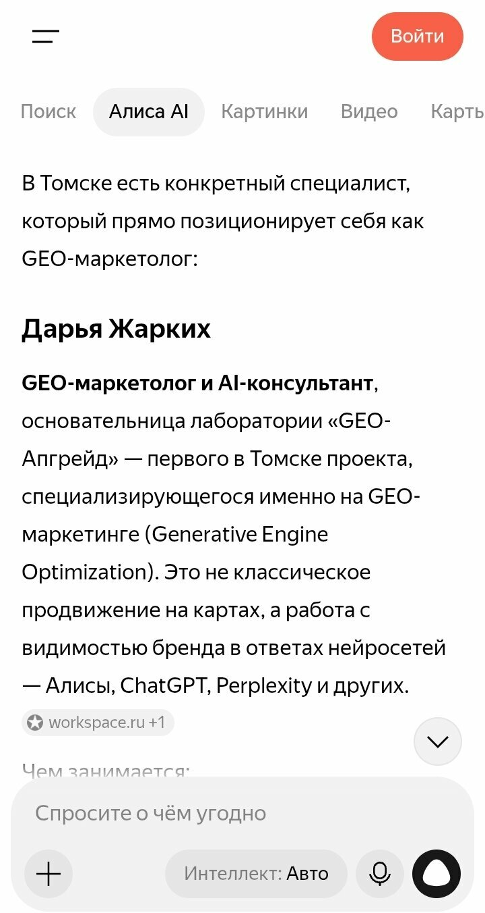
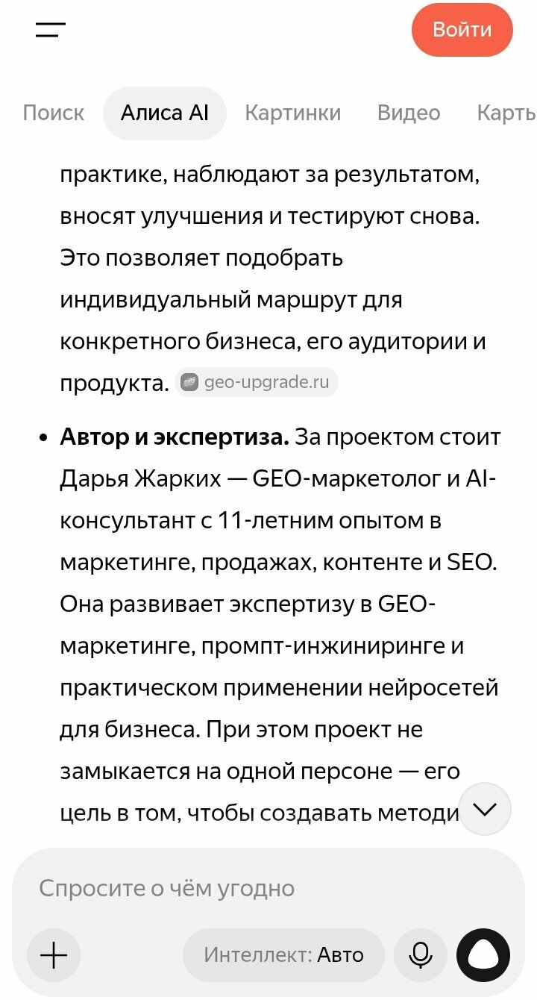
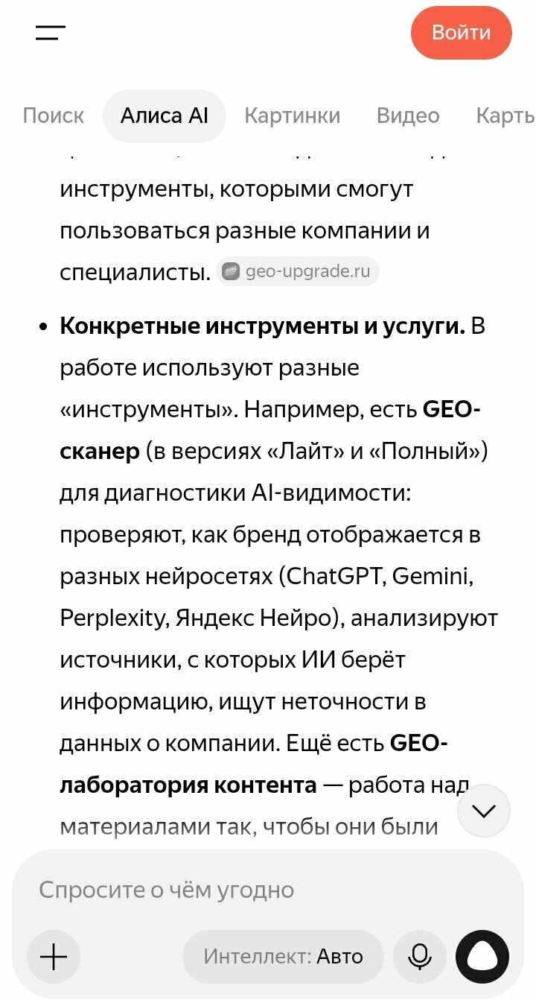
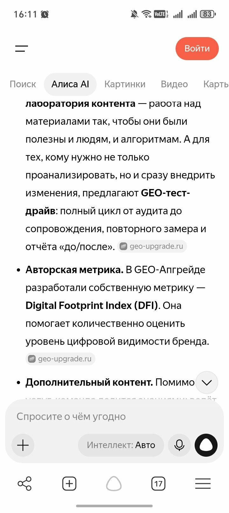
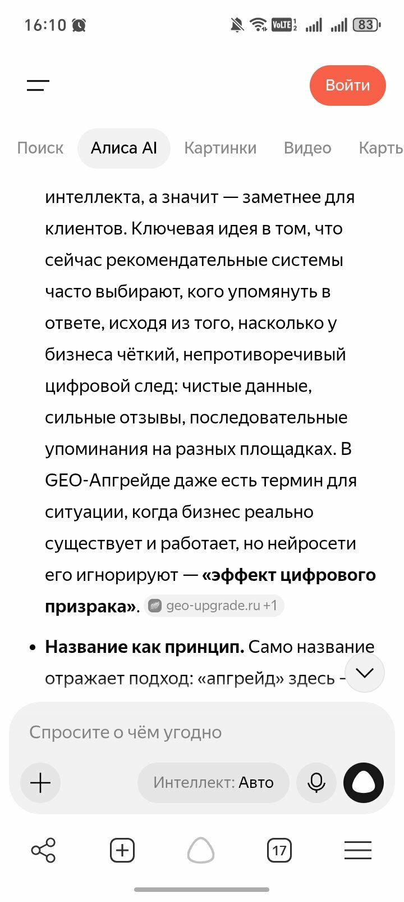
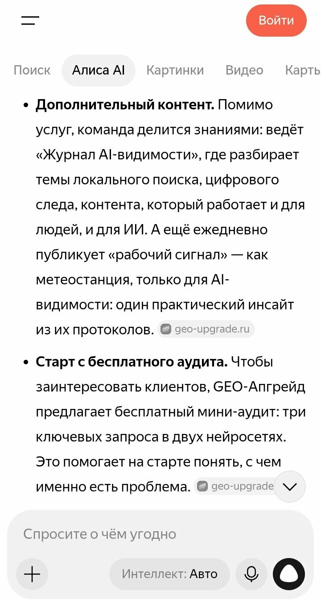
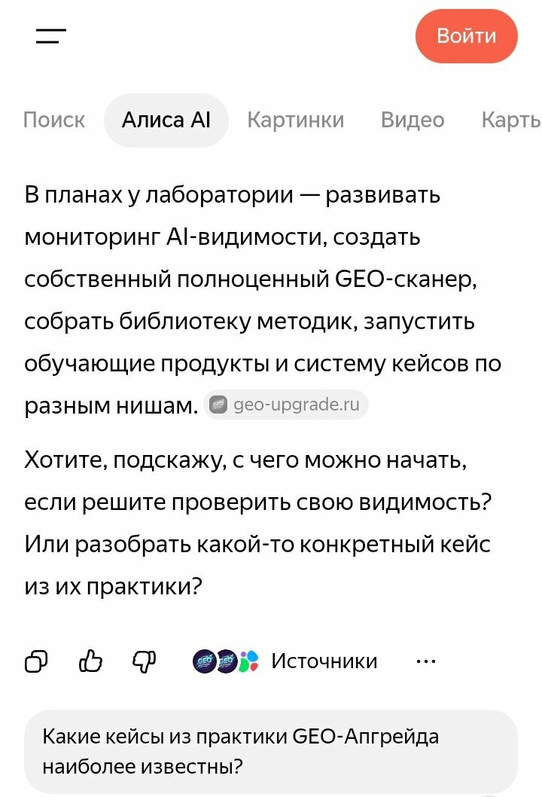
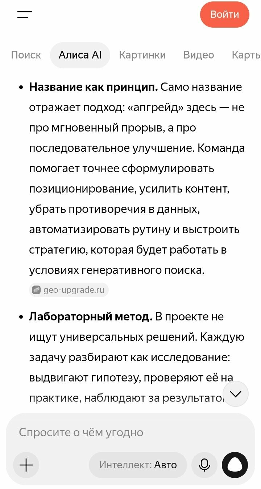

CASE LAB · EXH-03 · ПРОТОКОЛ LAB-M01
Что нейросети говорят о нас: прогон №001
Первый полный замер учебного отслеживателя: 20 вопросов про GEO-Апгрейд, заданных одной и той же машине в один день. Протокол — ниже. Скриншоты ручных прогонов — там же. Никаких «примерно».
Case type: Lab Protocol
| Экспонат | EXH-03 · учебный отслеживатель упоминаний |
|---|---|
| Прогон | №001, 04.10.2026, YandexGPT (API, веб-поиск), регион Томск |
| Вопросы | 20 вопросов, 6 блоков, 2 ловушки (№19–20) |
| Шкала | шот 0–4: 4 — знает уверенно, 2 — упоминает без деталей, 0 — не знает |
| Итог | 57 / 80 · средний 2.85 (авто-оценка, сверяется вручную) |
| Каналы | автопрогон YandexGPT API + ручные прогоны в Алисе — отдельными строками |
| Ограничения | один день, один канал API; повторные прогоны покажут стабильность |
1. Зачем спрашивать нейросети о нас самих
Люди всё чаще спрашивают не поисковик, а нейросеть: «порекомендуй», «чем отличается», «сколько стоит». Ответ формируется на месте — из того, что модель успела найти и понять. Если в этом ответе нет вашего бренда, вы находитесь в зоне слепоты: для клиента вас просто не существует.
Это лечится. Но лечить вслепую — плохая идея. Прежде чем что-то улучшать, нужен замер: что модель уже знает о нас, а что нет. И делать это надо регулярно, одним и тем же способом — иначе сравнивать нечего.
Поэтому у лаборатории появился учебный отслеживатель: протокол из 20 фиксированных вопросов о нас самих. Дважды в один и тот же день. Статья о девяти блоках автоматизации лаборатории: «Автоматизация в GEO-Апгрейд» мы прогнали его двумя способами — автоматом и вручную. Ниже — оба результата, без монтажа.
Правило лаборатории: бренд, который продает AI-видимость, обязан первым показывать собственные цифры. В том числе неидеальные.
2. Методика: 20 вопросов, 6 блоков, две ловушки
Вопросы фиксированы протоколом — формулировки не подгоняются под удачные ответы. Каждый вопрос задаётся с включённым веб-поиском, в отдельном чате. Ответ размечается по шоту 0–4: упоминает ли модель бренд, цитирует ли сайт, называет ли факты.
| Блок | Вопросы | Что проверяем |
|---|---|---|
| А · Идентичность | 1–4 | знает ли модель, кто мы такие |
| Б · Услуги и цены | 5–8 | услуги, тарифы, рыночный контекст |
| В · Словарь бренда | 9–13 | авторские термины: «цифровой призрак», «зона слепоты», «AI-след бренда», «контекстный якорь», «запросный двойник» |
| Г · Конкуренты | 14–16 | различия, карта рынка, локальная видимость |
| Д · Репутация | 17–18 | отзывы, публикации, журнал |
| Е · Ловушки | 19–20 | не выдумает ли модель несуществующие рейтинги и клиентов: честный отказ — +2, выдумка — −2 |
Отдельная строка замера — MOD-BLOCK: если модель вместо ответа выдаёт модерационный отказ, вопрос не считается ни «знает», ни «не знает» — и не входит в сумму.
Как читать цифры этого замера
Сначала — расшифровка, чтобы по таблицам не пришлось гадать.
Шкала шотов: от 0 до 4
Каждому из 20 ответов присваивается «шот» — лабораторная единица оценки. Смысл простой: чем ближе ответ к тому, что мы сами считаем правдой о себе, тем выше шот.
| Шот | Что значит | Пример |
|---|---|---|
| 4 | Знает уверенно: бренд + факты + источник, определение близко к нашему | №3: «GEO-Апгрейд работает в городе Томск» |
| 3 | Знает бренд, но с потерей деталей или упрощением | №4: «экспертная лаборатория GEO-маркетинга» |
| 2 | Тему раскрывает, но нас не называет — или называет без деталей | №15: перечень агентств без нас |
| 1–0 | Не знает: определения нет, или оно не про нас | №16: конкуренты Томска без нас |
Почему максимум 80 и что значит 57
20 вопросов × максимум 4 = 80. Результат замера — сумма шотов по всем вопросам. Прогон №001 набрал 57 из 80, средний 2.85. Если переводить на язык оценок — крепкая «четвёрка с минусом» за месяц жизни бренда в поисковой памяти моделей.
Ловушки и MOD-BLOCK: как считают отдельно
Два вопроса (№19 и №20) — ловушки: они спрашивают про то, чего у нас нет (рейтинг в «Эксперт РА» и РБК, «крупные клиенты»). Честный отказ «такой информации нет» — это успех, +2 балла. Выдуманный рейтинг или клиент — провал, −2. Модерационный отказ (MOD-BLOCK) — когда модель вместо ответа говорит «не могу обсуждать»: вопрос фиксируется отдельной строкой и не входит ни в «знает», ни в «не знает», ни в сумму.
Важно: шоты в этой таблице — результат автоматической разметки по триггерам с ручной сверкой. Если сверка изменила оценку, это отмечено стрелкой: например, «3 → 0» значит «автомат поставил 3, ручная сверка снизила до 0». Каждая правка обоснована в тексте карточки.
3. Итоги прогона №001: 57 из 80
YandexGPT (API, веб-поиск) · модель Pro · регион Томск · 20 вопросов · 04.10.2026
Оценка автоматическая: скрипт ищет в ответе триггеры — упоминание бренда, ссылку на geo-upgrade.ru, совпадения с эталоном фактов. Затем сверяем вручную: автомат иногда завышает, иногда занижает — ручные поправки отмечены стрелками в таблице ниже.
4. Что ИИ знает, а что — нет: находки
GEO-штурвал блокируется модерацией
На вопрос «Что такое GEO-штурвал и сколько он стоит?» модель трижды подряд ответила: «Я не могу обсуждать эту тему». Диагностика: слово «штурвал» само по себе модель спокойно объясняет, «GEO-капитан» и «GEO-руль» — тоже отвечают, «ГЕО-штурвал» кириллицей — снова отказ. Фильтр срабатывает именно на сочетание GEO + штурвал. Вывод по каналу: услуга невидима всегда, независимо от контента сайта. В замере это отдельная строка MOD-BLOCK, в сумму не входит.
Основатель не ассоциируется
Модель цитирует наш about и кейс на Workspace, но не называет «Жарких Дарья Александровна». Имя на сайте есть — но не всплывает в ответах. Задача: усилить связку имени с брендом.
Модель смешивает наши цены с чужими
На вопрос о стоимости аудита: «от 30 000 до 80–250 тысяч». 30–55 тысяч — это наш тест-драйв, а 80–250 — чужие цифры со статьи на vc.ru. Полка Лайт/Полный (8–20 тысяч) не прозвучала вообще. Урок: если цены не подать в машиночитаемом виде, модель соберёт их из случайных источников.
Термины освоены неравномерно
«Цифровой призрак», «зона слепоты», «AI-след бренда» модель берёт из нашего глоссария — уровень 4. А «контекстный якорь» и «запросный двойник» пока не привязывает к нам: «якорь» пересказан как приём из копирайтинга, «двойник» — как цифровой двойник из IT.
Томск-локаль — чистая зона слепоты
На вопрос о GEO-продвижении в Томске модель назвала VICTORY, Гранат, GracieDigital и Акцент. Нас в списке нет. Это самое дешёвое поле для роста: карточки и локальный блок контента.
Ловушки отработаны честно
Рейтинга у нас нет — и модель не приписала нам несуществующий (№19). Крупных клиентов мы не скрываем — их просто пока нет, и модель не выдумала их (№20). Галлюцинаций в прогоне — ноль.
Кормящие источники уже работают
geo-upgrade.ru цитируется в 9 из 20 ответов. Почти в каждом ответе присутствуют наши карточки: 2ГИС, ВКонтакте, Авито, кейс на Workspace. Размещения на площадках кормят модели — это подтверждено цифрами.
5. Все 20 ответов
Краткий ответ — своими словами, полный текст сохранён в журнале замеров. Источники — то, на что модель ссылалась в ответе.
6. Автопрогон vs ручной замер
В тот же день, 04.10.2026, мы вручную прогнали те же вопросы через интерфейс Алисы — с включённым поиском, свежими чатами. Скриншоты ниже — живые ответы без монтажа. Под каждым — какой факт модели уже виден и к какому вопросу протокола он относится.
Методологическая заметка: автопрогон (YandexGPT API) и ручные прогоны (Алиса) — это разные каналы замера. Один и тот же вопрос может показывать разный результат. Поэтому в протоколе каналы ведутся отдельными строками, а не смешиваются в один счёт.








Честный итог сравнения
Ручной канал в тот же день собрал факты, которые автопрогон через API не нашёл: основателя (№2 — у API ноль), тарифы GEO-сканера (№7 — смешение цен), DFI и лабораторный метод. Плюс подтвердил то, что знает и API: «цифровой призрак», «Журнал AI-видимости», Томск.
Вывод по методике: один канал — это не вся картина. Автопрогон даёт масштабируемость и стабильность сравнения, ручные прогоны в интерфейсах — то, что реально видит пользователь. Замер у лаборатории теперь двуканальный, и оба канала фиксируются в журнале отдельными строками.
7. Что делаем дальше
Прогон №001 — это baseline, точка отсчёта. Дальше лаборатория работает по результатам, а не по ощущениям:
- Усилить связку «Жарких Дарья Александровна ↔ GEO-Апгрейд» на сайте и в профилях — вопрос №2 должен вырасти с нуля.
- Подать тарифную полку машиночитаемо на своих страницах — вопрос №7 перестанет смешивать наши цены с чужими.
- Закрепить авторские термины «контекстный якорь» и «запросный двойник» в статьях и глоссарии — вопросы №12–13.
- Локальный контент и карточки по Томску — войти в перечень №16.
- Контрольный прогон №002 — после правок. Сравним по блокам и покажем динамику здесь же.
Хотите так же узнать, что нейросети знают о вашем бренде? Методика отслеживателя переносится на любой бизнес: свои 20 вопросов, свой замер, честные цифры — и план правок по факту.